Negative Integer Exponents
In this section, we will develop the basic properties used to manipulate negative integer exponents.
• A negative exponent means that the base is on the wrong side of the fraction line, so you need to flip the base to the other side.
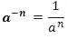
It is the reciprocal of that number with a positive exponent. a-n is the reciprocal of an
Example A:

The base 2 did not change. The negative exponent becomes positive in the denominator.
Example B:
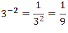
The base 3 did not change. The negative exponent becomes positive in the denominator.
Example C:

-3-2 is the negative of 3-2. The base is still 3.
Example D:

-3-2 As for (3)-2. The parentheses indicate that the base is -3.
Example E:
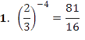
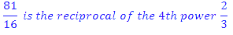
Example F:
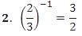 |
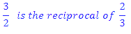
Example G:
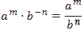
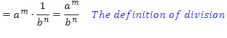
Example H: Use the rules of exponents to evaluate (2-3 ⋅ 104)-2.

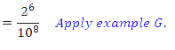
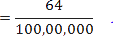
Example I:
Rewrite without a denominator, and evaluate:
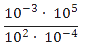
The rule for subtracting exponents
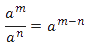
Holds even when an exponent is negative.
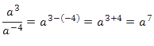
Therefore,
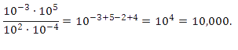
Exponent 2 goes into numerator as -2; exponent -4 goes there as +4.
Example J:
Rewrite without a denominator
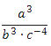
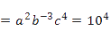
The Exponent 3 goes into the numerator as -3; the exponent -4 goes there as +4
Negative exponents in the numerator get moved to the denominator and become positive exponents. Negative exponents in the denominator get moved to the numerator and become positive exponents. You can only move the negative exponents.
|